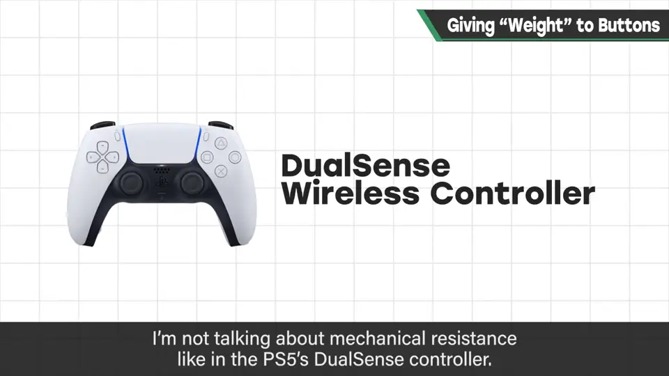
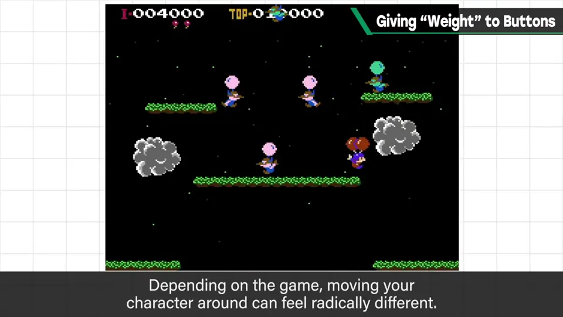
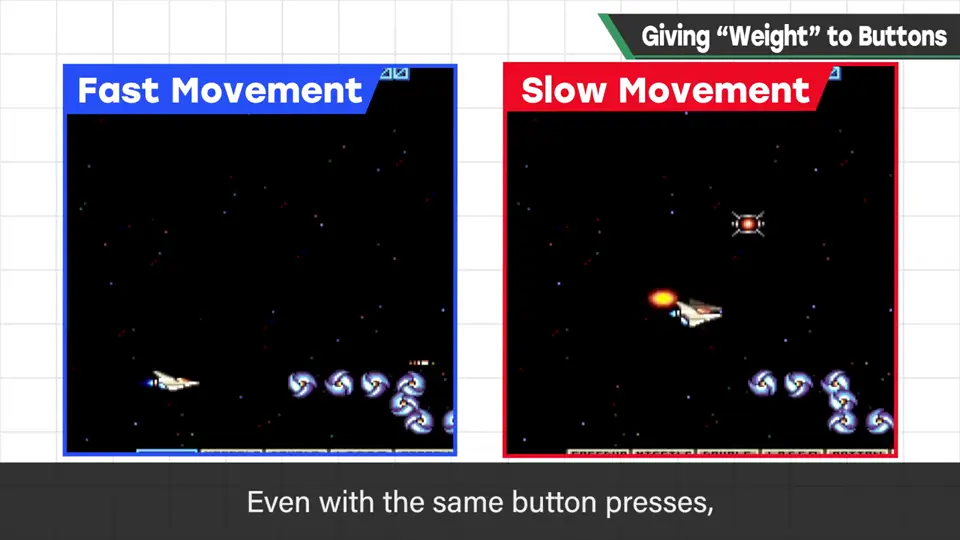
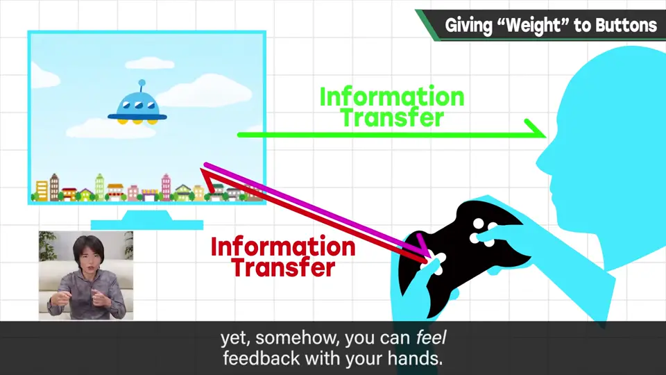
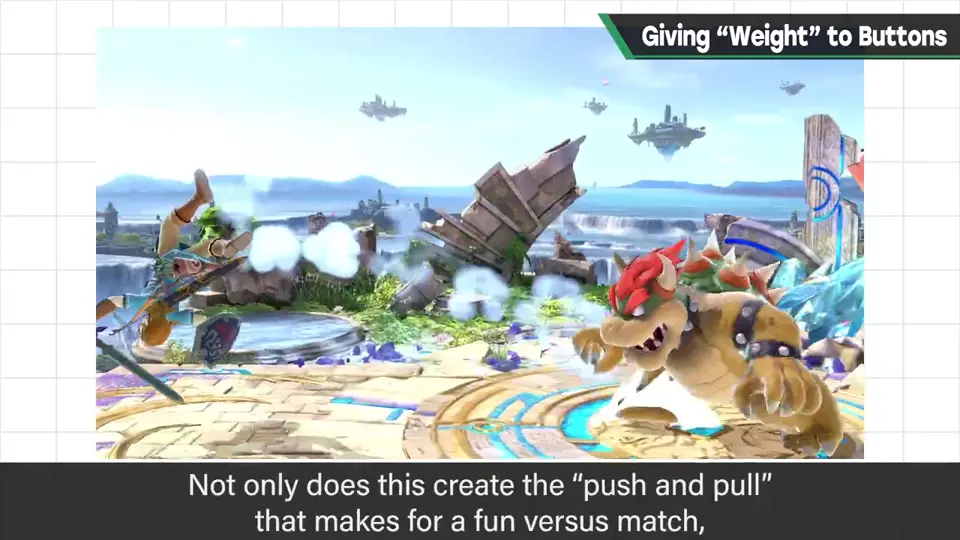
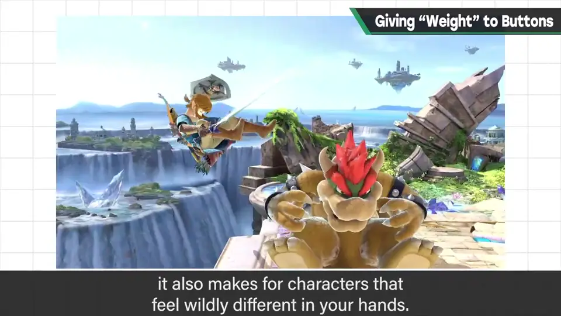

速览
玩游戏时，你有没有感觉按钮有某种「重量」？樱井有。不是 PS5 DualSense 那种精心演出的反作用力，而是明明是同一个物理按钮，却因游戏表现和规格而感觉轻重不同。模拟摇杆和多边形动作也许不易察觉，但 FC 十字键的操作会随自机的移动规格手感大不相同：单是动作快慢就有相当差别，惯性大小、跳跃规格、延迟、帧率等也都有影响。同一个物理按钮，因画面上能操作的东西而给人如此不同的印象——这是电子游戏能拥有的武器，请敏感地观察。电子游戏是电脑与人连接起来玩的：用眼和耳接收电脑的信息，用手给出自己的信息——常被认为各是单行道，但从手得到的触感确实存在；仔细思考这点，规格的组合方式可能也会有点改变。《大乱斗》给各斗士的移动缓急、攻击破绽动作的夸张度，不只是为了纯粹产生对战的攻防，也对手感做了各种推敲。其实每换一个主机，模拟摇杆的规格都不同，所以要各种重组；所谓「游隙」，即识别摇杆倾斜的最低值等，每次都要重新设定。
1. 按钮也有重量 0:03
玩游戏时，你有没有感觉按钮有某种「重量」？樱井有。

这不是 PS5 DualSense 手柄那种精心演出的反作用力，而是：明明是同一个物理按钮，却因为游戏的表现和规格，感觉变轻或变重。
2. FC 十字键最明显 0:30
用模拟摇杆或多边形动作也许不容易察觉，但 FC 十字键的操作，会因自机的移动规格而手感大不相同。


单是动作慢或快，感觉差别就相当大；此外惯性的大小、跳跃规格、延迟、帧率等，各种东西都会影响。
3. 手也能接收信息 1:12
电子游戏是电脑和人连接起来玩的：用眼和耳接收电脑的信息，用手给出自己的信息。常被认为各自是单行道，但从手得到的触感确实存在。仔细观察思考这一点，规格的组合方式也许会有点改变。

4. 大乱斗的手感推敲 1:41
《大乱斗》给各斗士的移动缓急、攻击破绽动作的夸张程度等，不只是纯粹为了产生对战的攻防，也对手感做了各种推敲。


其实每换一代主机，模拟摇杆的规格都不同，所以要各种重组。所谓「游隙」——识别摇杆倾斜的最低值等——每次都要重新设定。
自测题
1. 同一个物理按钮为什么会感觉轻重不同？
因画面上操作对象的规格：移动快慢、惯性大小、跳跃规格、延迟、帧率等。 0:30
2. 樱井说电子游戏的信息交换里常被忽略的是什么？
从手得到的触感——手也能接收信息，不只是单向输出。 1:12
3. 换主机时《大乱斗》要重设什么？
模拟摇杆规格不同，需要重组，包括识别摇杆倾斜的最低值（游隙）。 2:02